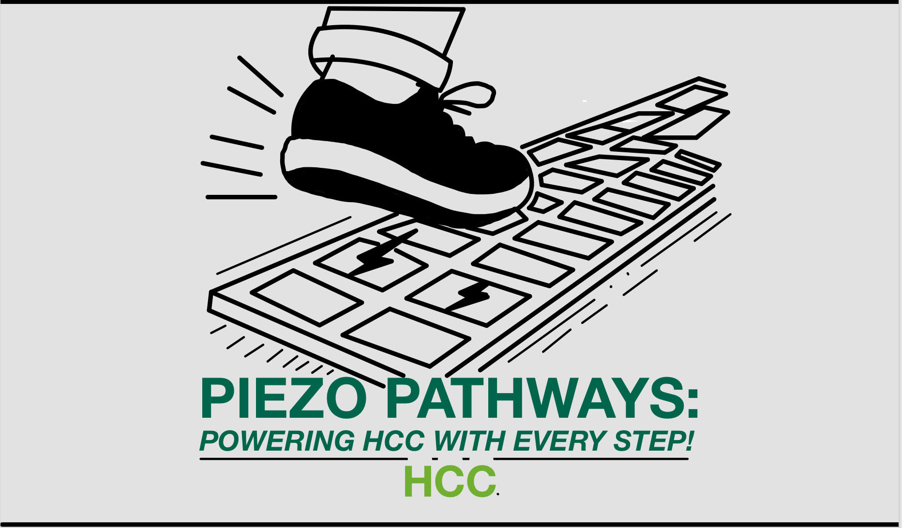
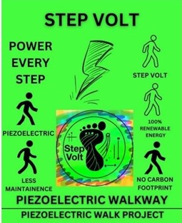
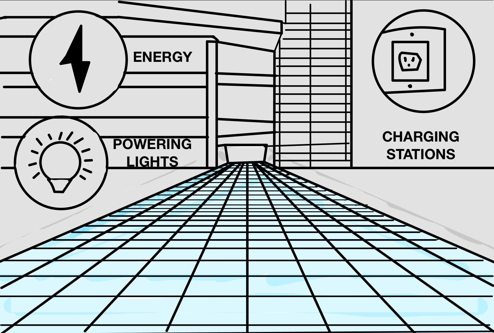
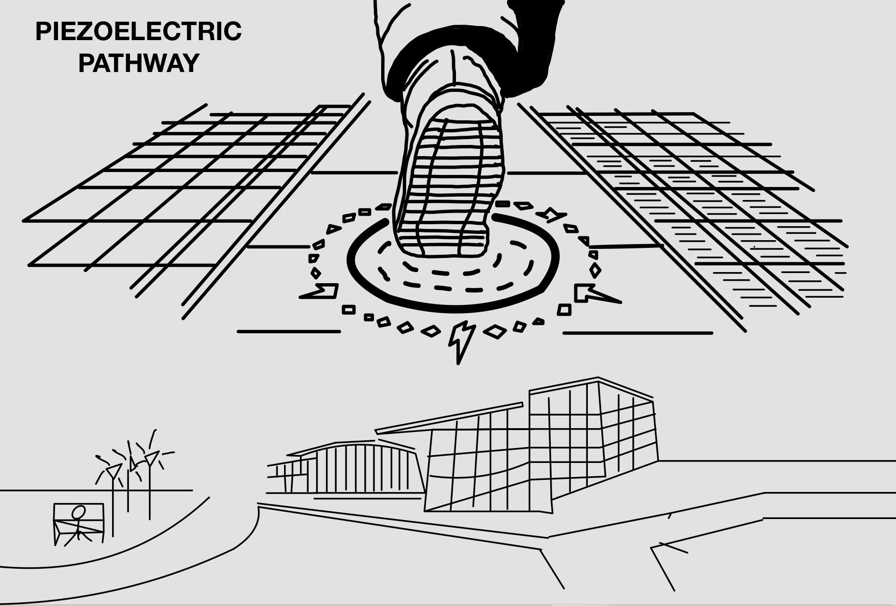
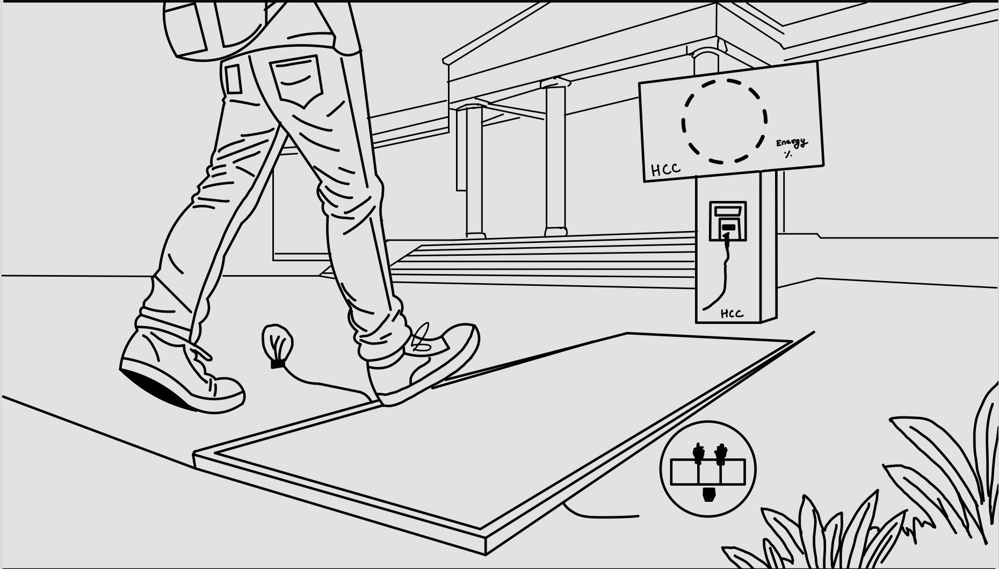

Revolutionizing Walkways into Renewable Energy Sources
Step Volt transforms foot traffic into renewable energy through advanced piezoelectric walkways. By harnessing the power of human steps, we provide sustainable solutions that benefit both the environment and institutions like HCC.
Thousands of footsteps on campus go unused every day. This wasted energy represents a missed opportunity to generate renewable power. Step Volt addresses this by converting kinetic energy into usable electricity, offering a sustainable solution for lighting and energy needs at HCC.
Piezoelectric walkways capture kinetic energy from human foot traffic and convert it into usable electricity. Benefits include:
Selling Points:
Fee Summary and Schedule:
Timeline:
Step Volt combines cutting-edge technology with extensive research and successful pilot projects. Our team is experienced in implementing sustainable solutions, ensuring cost-efficiency and environmental benefits tailored to HCC's needs.
Step into the future of renewable energy! Introducing "Step Volt", a piezoelectric-powered walkway that will be the future of energy.
With our piezoelectric pathways, you can expect up to 90% savings in maintenance!!! All while being 100% sustainable and renewable!
Our Piezoelectric walkways have been trialed and tested for maximum power efficiency! Saving the planet is our top priority, but we save your pocket while doing so.
Here at Step Volt, we imagine the future of walking on piezoelectric walkways in all pedestrian-heavy areas, producing enough energy to power whole cities!
Piezoelectric walkways can work under all sorts of weather and temperatures, making them perfect for outdoor uses worldwide.
Our Piezoelectric Walkway is just like walking on any other everyday walkway, with the only difference being that your energy is used toward a greater cause!
If you're interested in our service, contact us at:
Phone: +1 713-628-6922
We look forward to collaborating with you to revolutionize energy usage on campus!